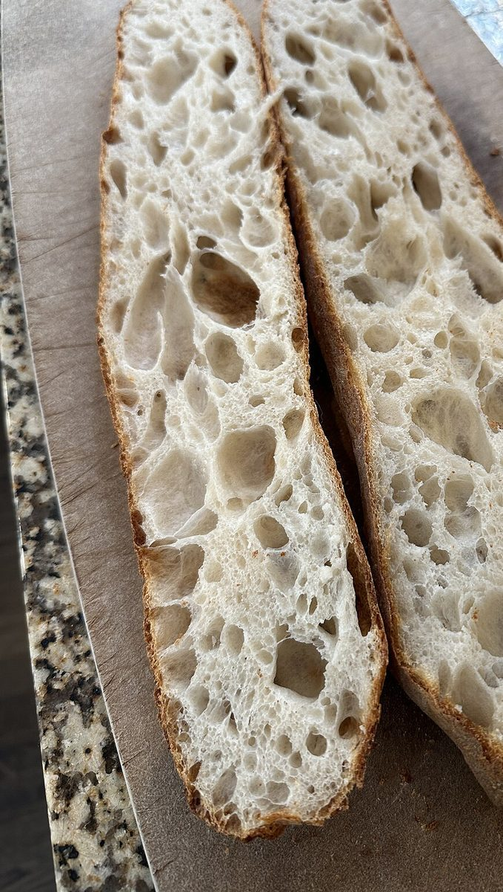
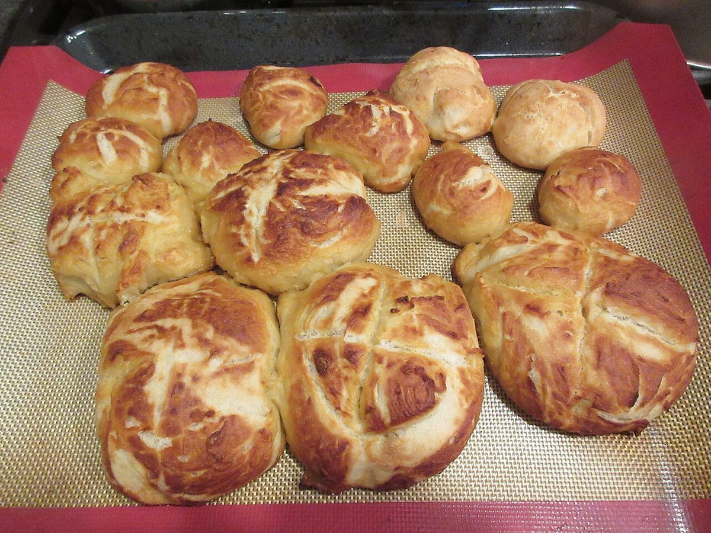
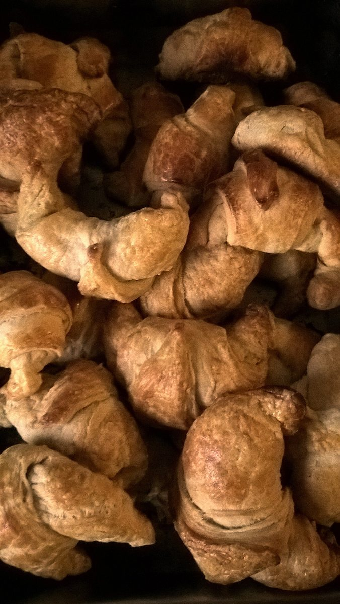
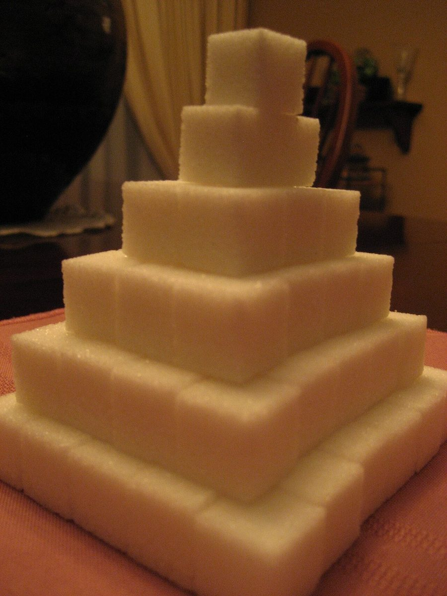

SPECIMEN No.1 / パン屋(ベーカリー)
I WORKSBAKERY
群馬県前橋市上大島町にあるパン屋「I WORKS BAKERY」のご案内ページです。営業時間やメニューなど、詳しいことは準備中。まずはInstagramをのぞいてみてください。


i の点 = 丸いパン / i の棒 = 割ったパンの断面(国外・撮影地不明のイメージ写真)
制作側の連想
屋号の「I」から、小文字の i へ
お店の名前の由来は分かりません。制作側は、屋号の頭にある「I」から、欧文活字の小文字 i を連想しました。i は「点」と「棒」の2つの部品でできた文字です。そこでこのサイトは、丸いもの(点)と細長いもの(棒)の写真を組み合わせて、i を作る見本帳のようにしています。制作側の連想で、お店の理念・由来とは無関係です。
見本帳
点と棒、5通りの i。
写真はお店や所在地のものではありません。国外・撮影地不明のフリー素材で、お店で扱うものを示すものでもありません。


i-01
点: ふくらんだ生地 / 棒: 麺棒


i-02
点: 輪のクロワッサン / 棒: バターのかたまり


i-03
点: 丸いロール / 棒: 持ち手つきの木の板

i-04
点: 結びパン / 棒: パンナイフ


i-05
点: クロワッサンの山 / 棒: 積んだ角砂糖
ご案内
お店のこと(確認できたものだけ)
| 所在地 | 〒379-2153 群馬県前橋市上大島町482-1 |
|---|---|
| 電話 | なし |
| 営業時間 | 準備中 |
| 定休日 | 準備中 |
| ご予約 | 準備中 |
| 駐車場 | 準備中 |
| SNS | Instagram @i_works_bakery_765c |